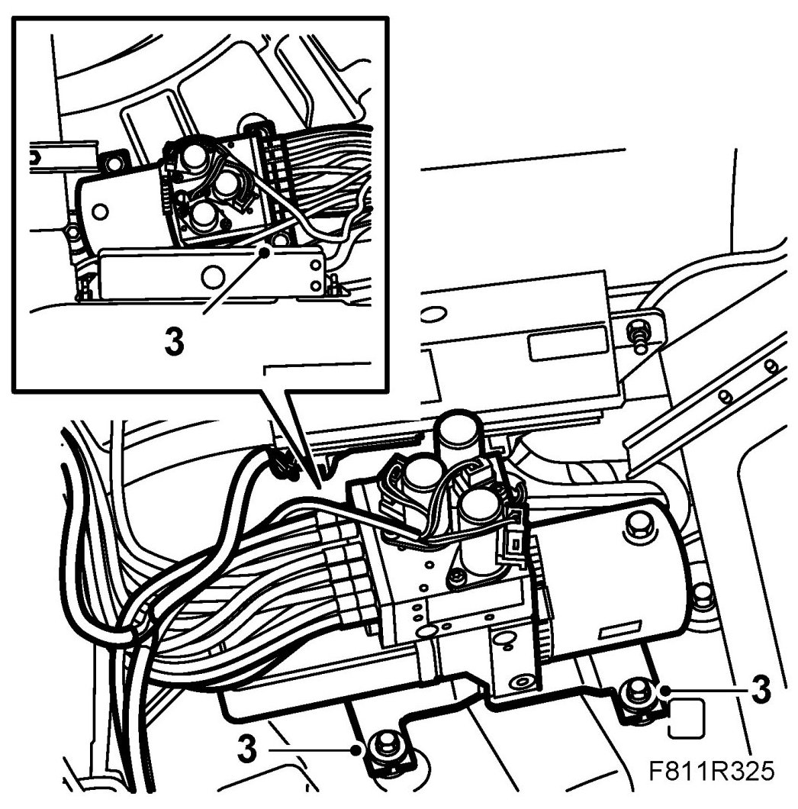
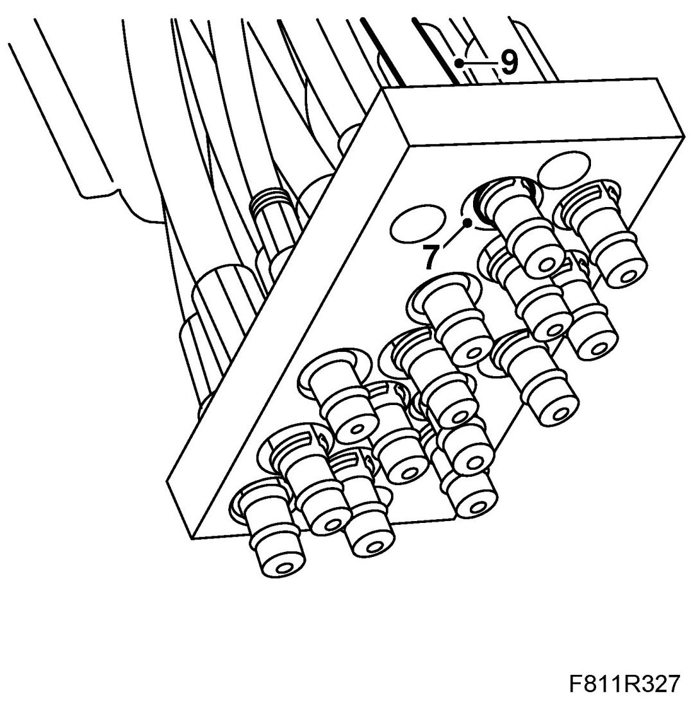
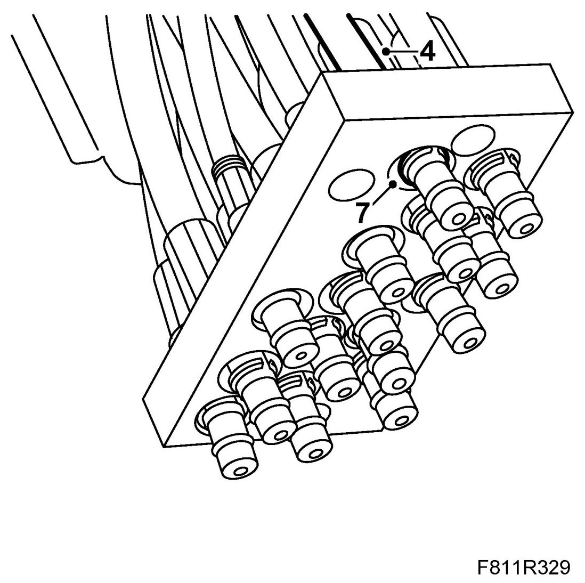
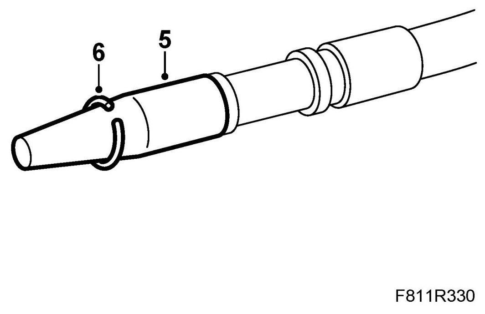
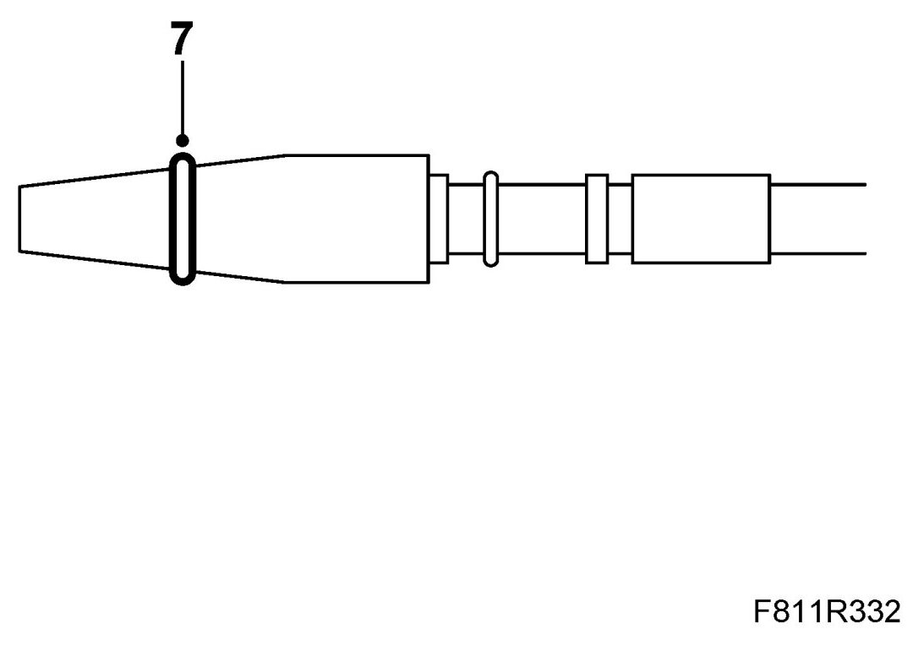
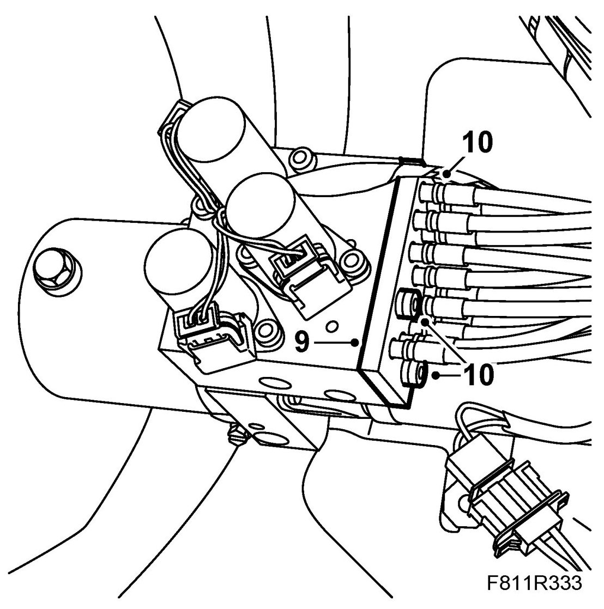
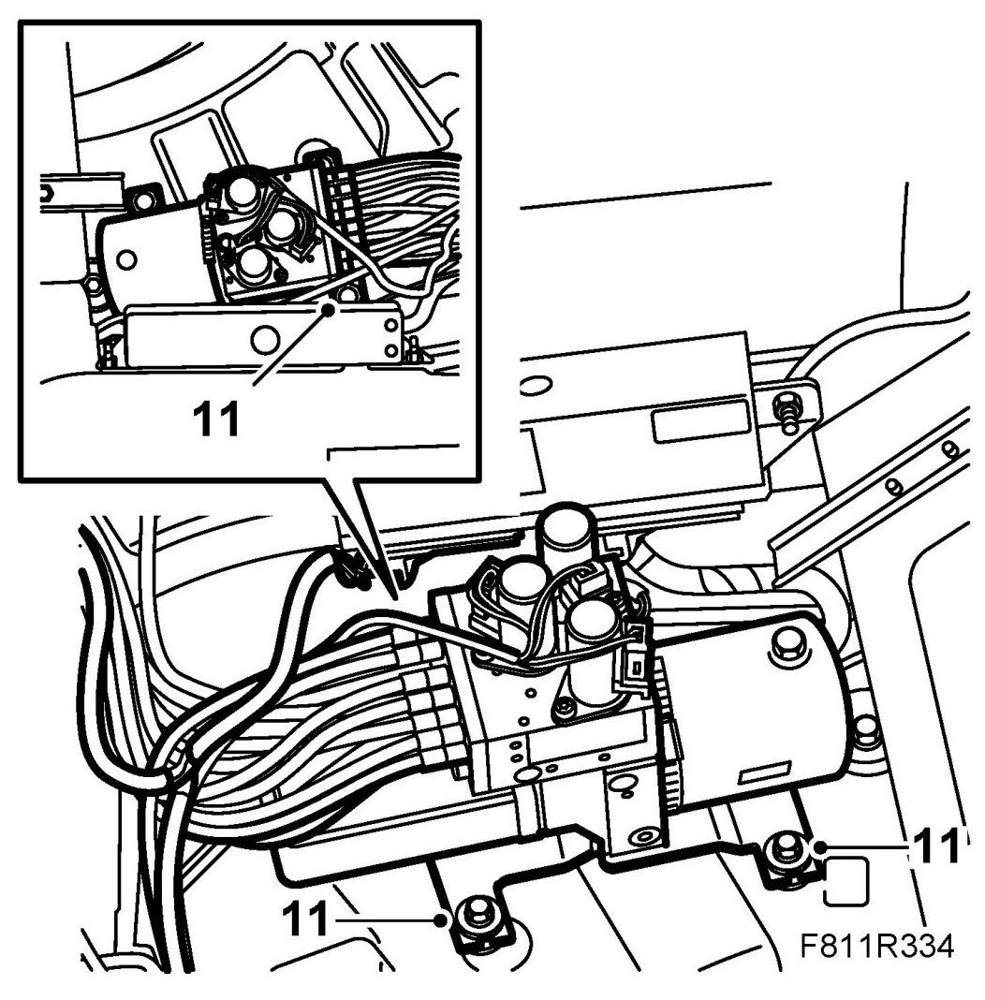

Hydraulic Lines
Hydraulic Lines
Removing
The following is a description of changing the hydraulic lines on the hydraulic unit only. Changing hydraulic lines to the hydraulic cylinder is illustrated in the instructions for the respective hydraulic cylinder. See Soft top cover hydraulic cylinder, Hydraulic cylinders for locking first bow, Soft top hydraulic cylinder or Sixth bow hydraulic cylinder.
It is not always necessary to dismantle the entire hydraulic cylinder when changing its hydraulic lines.
1. Close the soft top completely.
2. Remove Luggage compartment side trim, CV.
3. Undo the nuts to the hydraulic unit and lift it out somewhat to access the connections.
IMPORTANT: Lift up the hydraulic unit carefully so that the hydraulic hoses are not damaged.

4. Place some paper under the hydraulic unit to catch any hydraulic fluid that may run out.
5. Remove the bolts for the hydraulic hose attaching plate.
6. Remove the attaching plate together with the hydraulic lines from the hydraulic unit.
7. Remove the circlip from the hydraulic line connection piece being changed using a small screwdriver.

IMPORTANT: If several hydraulic lines are being replaced, they must be marked together with their connections to the hydraulic unit and hydraulic cylinders. They must not be mixed up. The hydraulic lines are marked with the same number at both ends and are different lengths. In addition, the entries through the attaching plate are marked to avoid confusion.
8. Pull out the hydraulic line from the attaching plate.
9. Remove the cable tie and open the hydraulic line attachments.
10. Detach the relevant hydraulic line from the side of the hydraulic cylinder. See Soft top hydraulic cylinder, Hydraulic cylinders for locking first bow, Sixth bow hydraulic cylinder or Soft top cover hydraulic cylinder.
11. Take out the hydraulic line.
Fitting
1. Put the hydraulic line in mounting position.
IMPORTANT: Hydraulic lines must be refitted as they were earlier or there will be a risk of them being damaged when the soft top is operated.
2. Connect the hydraulic line to the side of the relevant hydraulic cylinder. See Soft top hydraulic cylinder, Hydraulic cylinders for locking first bow, Sixth bow hydraulic cylinder or Soft top cover hydraulic cylinder.
3. Fit the cable tie and close the fasteners used for fitting the hydraulic lines.
IMPORTANT: Hydraulic lines must be refitted as they were earlier or there will be a risk of them being damaged when the soft top is operated.
4. Insert the hydraulic lines into the attaching plate.

5. Press on special tool 82 93 854 Fitting tool, hydraulic line over the hydraulic line connection.

6. Place the circlip on the taper of the special tool. Press it over the flange on the line.
7. Place the O-ring on the taper of the special tool. Fit the O-ring on the hydraulic line.

8. Remove the special tool.
9. Place the attaching plate together with the hydraulic lines in mounting position.

10. Fit and tighten the bolts for the hydraulic line attaching plate.
11. Place the hydraulic unit in mounting position. Fit the hydraulic unit nuts.

12. Fill the reservoir to MAX with fluid.
See Checking/filling oil.
Use 89 96 860 Power steering fluid.
IMPORTANT: Never use the same fluid as in the Saab 900 Convertible -M94
13. Open and close the soft top for 5 complete cycles to bleed the system and check its function.
14. Check for any fluid leaks.
15. Check the oil level and top up as necessary. See Checking/filling oil. Use 89 96 860 Power steering fluid.
16. Connect the diagnostics tool and erase any diagnostic trouble code.
17. Fit the luggage compartment trim. See Luggage compartment side trim, CV.